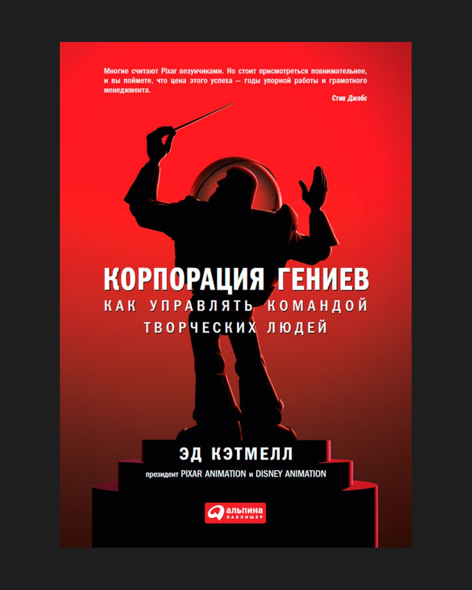

Книга Эда Кэтмелла (президент компании) рассказывает про внутреннюю кухню одного из самых успешных творческих стартапов в мире — Pixar. Автор показывает, как на практике устроена культура, которая помогает сильным специалистам раскрываться по максимуму.
Pixar изначально строилась вокруг идеи: собрать максимально талантливых людей и создать среду, в которой они смогут давать сильный результат. Но оказалось, что талант сам по себе не гарантирует успех. Ключевую роль играет культура: насколько свободно в команде можно говорить о проблемах, насколько честной остается обратная связь и насколько безопасно ошибаться.
В карточках собрал важные принципы из книги, которые напрямую применимы к любой команде. Они помогают понять, как строить среду, где сильные люди могут давать сильные результаты.
Карточки
Проблемы всегда скрыты в системе
В любой компании существует больше проблем, чем кажется руководителю Люди склонны сглаживать сложности, откладывать разговор о них или формулировать их мягче, чем они есть на самом деле, поэтому часть проблем долго остается вне поля зрения. Поэтому ключевая задача лидера — строить среду, где проблемы можно поднимать без риска. Когда сотрудники понимают, что честный разговор о сложностях приветствуется, проблемы обнаруживаются раньше и обходятся компании дешевле.
Честность важнее иерархии
В иерархических структурах информация часто искажается по мере движения вверх Сотрудники стараются формулировать обратную связь аккуратнее, чтобы не конфликтовать с руководством. Поэтому в сильных командах создают механизмы прямой обратной связи, где идеи и проблемы обсуждаются независимо от должностей. Когда правда может свободно двигаться по организации, решения становятся эффективнее.
Braintrust — механизм коллективного интеллекта
В Pixar существует формат встреч Braintrust, где опытные специалисты собираются, чтобы обсуждать проект и давать максимально прямую обратную связь. Участники не обладают властью менять проект, поэтому разговор сосредоточен на качестве идеи. Такой формат позволяет отделить обсуждение от политики и иерархии. Команда получает концентрированную экспертизу, но финальное решение остается за автором проекта.
Итерационный подход
Первые версии творческих проектов почти всегда выглядят слабо. Это естественная часть процесса, потому что идеи формируются постепенно через множество итераций. Поэтому важно как можно раньше показывать черновые версии работы и улучшать их через обратную связь. Команды, которые ждут идеального результата перед демонстрацией, теряют время и замедляют развитие проекта.
Ошибки — часть производственного процесса
Инновационные проекты неизбежно сопровождаются ошибками Когда команда работает с новыми идеями и технологиями, невозможно заранее предусмотреть все сложности. Поэтому задача организации — не избегать ошибок, а выстраивать процессы, которые позволяют быстро их обнаруживать и исправлять. Чем раньше можно заметить ошибку, тем дешевле она обходится.
Люди важнее идей
Хорошая команда способна значительно улучшить даже среднюю идею Сильные специалисты находят новые решения, корректируют направление проекта и постепенно усиливают продукт. Слабая команда, напротив, может разрушить даже перспективную концепцию. Поэтому в долгосрочной перспективе компании выигрывают, когда инвестируют прежде всего в людей и их развитие.